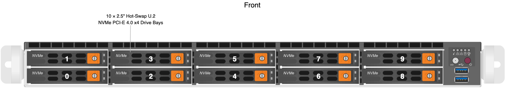
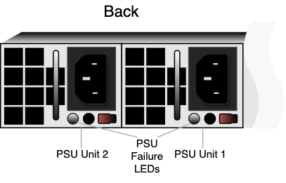

This section explains how to replace hardware components in Supermicro 1114S nodes.
The Supermicro A+ WIO 1114S-WN10RT platform has reached its End of Life (EoL) on April 18, 2025. For more information about End of Platform Support (EoPS), contact Supermicro support.
- We strongly recommend engaging an on-site engineer to replace failed hardware components including but not limited to any procedure that:
- This guide doesn't cover
- You haven't received training on
- Requires precautions to avoid damage caused by electrostatic discharge (ESD) by using industry standard anti-static equipment (such as gloves or wrist straps)
- We don’t recommend updating firmware on Qumulo-certified hardware nodes unless the equipment manufacturer or a member of the Qumulo Care Team advises you to do so. For questions about this process, contact the Qumulo Care Team.
To Perform the Part Replacement Procedure by Using the FVT
When you replace a component such as the motherboard or a NIC card in your node, you must ensure that the firmware version and configuration are correct for your new components. To do this, you must perform the part replacement procedure by using the FVT.
Before you replace the motherboard, you must request a new Data Center Management Suite (DCMS) license key from Supermicro and apply it before you run the FVT. (The license key uses the BMC MAC address which changes with the motherboard.) If you don’t install a DCMS license on your node, the Field Verification Tool (FVT) fails, preventing you from running the part replacement procedure in the FVT, which normalizes the firmware and BIOS configuration for your new motherboard.
-
Boot by using the latest version of the Qumulo Core USB Drive Installer.
-
Select [*] Perform maintenance.
-
Select [2] Perform automatic repair after part replacement (non-destructive).
The part replacement procedure runs and the FVT passed! message appears.
In some cases, after the part replacement procedure, the message
FIX: Run the FVT flash command. appears. Enter 1 as you would for a fixable issue to reboot the node and then repeat the part replacement procedure.To Replace a Drive
The ten hot-swap drive carriers are located at the front of your Supermicro 1114S chassis.
Replacement drives, including the on-site spare drives that you received with your original nodes, are provided without a drive carrier. When replacing a faulty drive, you must remove the existing drive from its carrier and then insert the new drive into the carriers. The drive carriers are toolless and don’t require any screws.
We strongly recommend having a Supermicro engineer perform on-site boot drive replacement.
-
Locate the drive that requires replacement by using the drive bay mapping.

-
To remove the existing drive:
-
Press the orange release button on the right of the drive carrier until the drive carrier handle extends on the left.
-
Use the drive carrier handle to pull the carrier out of the chassis.
-
To remove the drive from the carrier, undo the mounting clips.
-
-
To install a replacement drive:
-
Insert the new drive into the drive carrier with the printed circuit board (PCB) side facing down and the connector end facing towards the rear of the tray.
-
Secure the drive to its carrier by using the mounting clips.
-
Insert the drive carrier into the chassis with the orange release button facing right.
-
Push the drive carrier into the chassis until the handle retracts and clicks into place.
-
If you remove and reinsert a drive extremely quickly (faster than one second), the baseboard management controller (BMC) doesn’t recognize the drive and the activity LEDs don’t return to their normal states. To resolve this issue, remove the drive, wait five seconds, and then reinsert it.
Initializing the Replacement Boot Drive
After you replace the boot drive, you must initialize the replacement boot drive by using the Qumulo Core Installer and then rebuild the replacement boot drive by using a script on the node in your cluster.
Step 1: Initialize the Replacement Boot Drive
To get the correct version of the Qumulo Core Installer for the node in your cluster, contact the Qumulo Care Team
-
Power on your node, enter the boot menu, and select your USB drive.
The Qumulo Core Installer begins to run automatically.
-
When prompted, take the following steps:
-
Select
[x] Perform maintenance. -
Select
[1] Boot drive resetand then follow the prompts.
The Qumulo Core Installer initializes the boot drive.
-
-
When the process is complete, the node is powered down automatically.
Step 2: Rebuild the Replacement Boot Drive
-
Power on your node and log in to the node by using the
qqCLI. -
To get
rootprivileges, run thesudo qshcommand. -
To stop the Qumulo Networking Services, run the
service qumulo-networking stopcommand. -
To configure the IP address for the node, run the
ip addr addcommand and specify the node’s IP address. For example:ip addr add 203.0.113.0/CDR dev bond0 -
Ensure that the node can ping other nodes in the cluster.
-
Run the
rebuild_boot_drive.pyscript and specify the IP address of another node in the cluster, the ID of the node whose boot drive has been replaced, and the password of the administrative account of the cluster. For example:Note
If your password includes special characters such as the parenthesis (() or the asterisk (*), use the backslash (\) to escape these characters./opt/qumulo/rebuild_boot_drive.py \ --address 203.0.113.1 \ --node-id 2 \ --username admin \ --password my\(Special\*PasswordFollow the prompts.
-
When the process is complete, reboot the node.
To Replace a Power Supply Unit (PSU)
The two hot-swap PSUs are located at the front of your Supermicro 1114S chassis. If either of the two PSUs fails, the other PSU takes on the full load and lets the node continue operating without interruption.
When a PSU fails, the Info LED at the front of the node begins to blink red every four seconds. In addition, the failure LED on the PSU at the back of the node lights up.
-
To determine which PSU failed, check the PSU LED.

-
Disconnect the power cord from the existing PSU.
-
To remove the existing PSU, press the purple release tab to the left while pulling on the handle.
-
Insert the new PSU and push it into the chassis until it clicks into place.
-
Connect the power cord to the new PSU.
To Replace a Fan
Your Supermicro 1114S chassis has six internal fans. When a fan fails, the Info LED at the front of the node begins to blink red every second.
- The fans aren't hot-swappable. You must power off the node to replace a fan. However, you may remove the top cover to determine which fan failed.
- For optimal air circulation, you must always reinstall the top chassis cover. You must never run the node for an extended period of time with the top chassis cover removed.
-
Power off the node, remove the top chassis cover, and disconnect the power cords from both PSUs.
-
Disconnect the existing fan housing cable from the motherboard and remove the fan housing from its two mounting posts.
-
Insert a new fan provided by Supermicro into the housing, making sure that the airflow direction arrows on top of the fan face the same direction as the arrows on the other fans.
-
Reposition the fan housing over the two mounting posts and connect the fan housing cable to the motherboard.
-
Power on the node and confirm that the new fan is working properly and the Info LED has stopped blinking red.
-
Install the top chassis cover.
To Replace a DIMM
Your Supermicro 1114S chassis has 16 DIMM slots (8 × 16 GB DIMMs for a total 128 GB of memory).
To identify which DIMM failed, you must use the baseboard management controller (BMC) on the node or another hardware monitoring solution.
- Use extreme caution when handling DIMMs. Don't touch their metal contacts.
- Never force a DIMM into a slot. Each DIMM has a keyed notch which lets you insert the module in only one way.
- DIMMs aren't hot-swappable. You must power off the node to replace a DIMM.
- For optimal air circulation, you must always reinstall the top chassis cover. You must never run the node for an extended period of time with the top chassis cover removed.
-
Power off the node, remove the top chassis cover, and disconnect the power cords from both PSUs.
-
Remove the existing DIMM.
The following is the DIMM slot mapping. In this diagram, the CPU socket mounting bracket and power headers are at the bottom.
Slot 1 2 3 4 5 6 7 8 CPU Socket 9 10 11 12 13 14 15 16 DIMM D2 D1 C2 C1 B2 B1 A2 A1 Bracket at bottom E1 E2 F1 F2 G1 G2 H1 H2 -
To remove the existing DIMM, press both DIMM slot release tabs outwards. When the module is loose, remove it from the slot.
-
To insert a new DIMM, align the keyed notch on the DIMM with the receptive points on the DIMM slot.
-
Push in both ends of the DIMM straight down until it clicks into place.
-
Press both DIMM slot release tabs inwards.
-
Install the top chassis cover.
-
Power on the node.